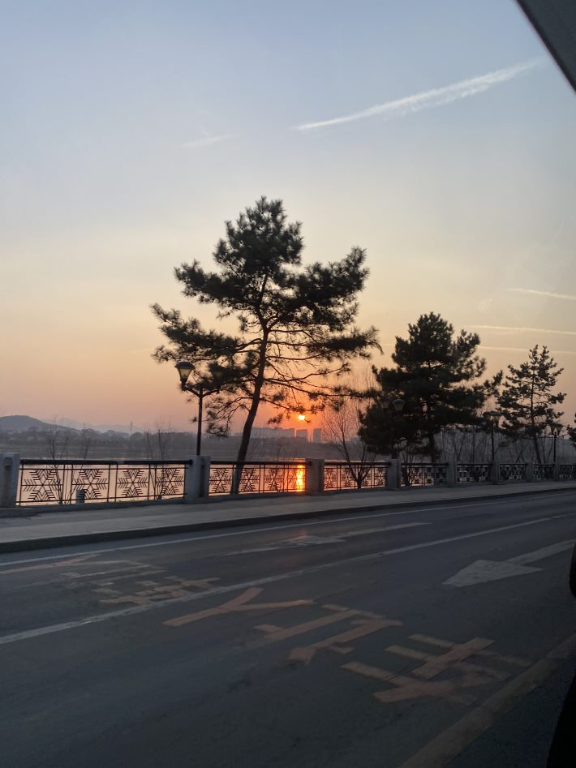
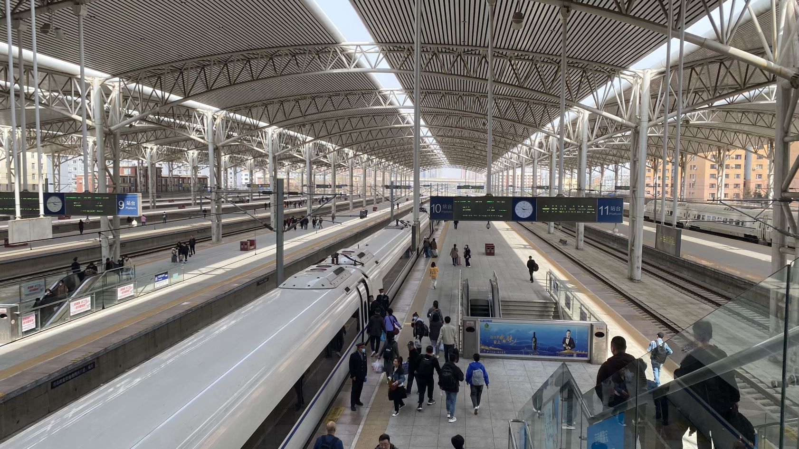
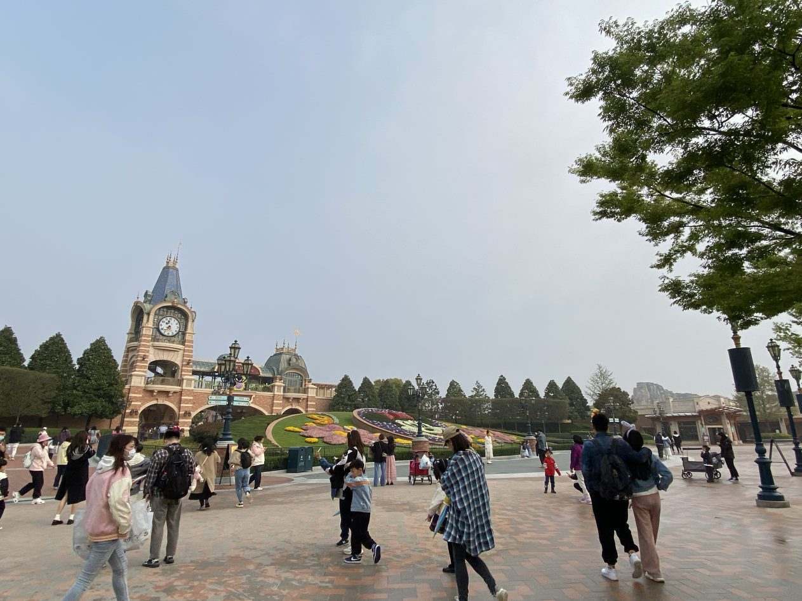

广州 GuangZhou pt.1
22 Mar - 27 Mar

吉林 JiLin
27 Mar - 3 Apr

JiLin had a lot less to do than GuangZhou, but it was exciting none the less. I got to visit Grandpa and both aunts. We once again had a lot to eat, which does seem to be a trend for this trip.
枣庄 ZaoZhuang
3 Apr - 6 Apr

After visiting dad's side of the family, me and ant (brother) hopped on the 9hr train to ZaoZhuang to visit mum's side. We only stayed there for three days, and not much happened here.
上海 ShangHai
6 Apr - 9 Apr

We would have gone back to GuangZhou, but mum wanted to meet a friend who is almost as busy as she is. So we went to ShangHai for a few days. Not that I'm complaining - we did get to go to Disneyland.